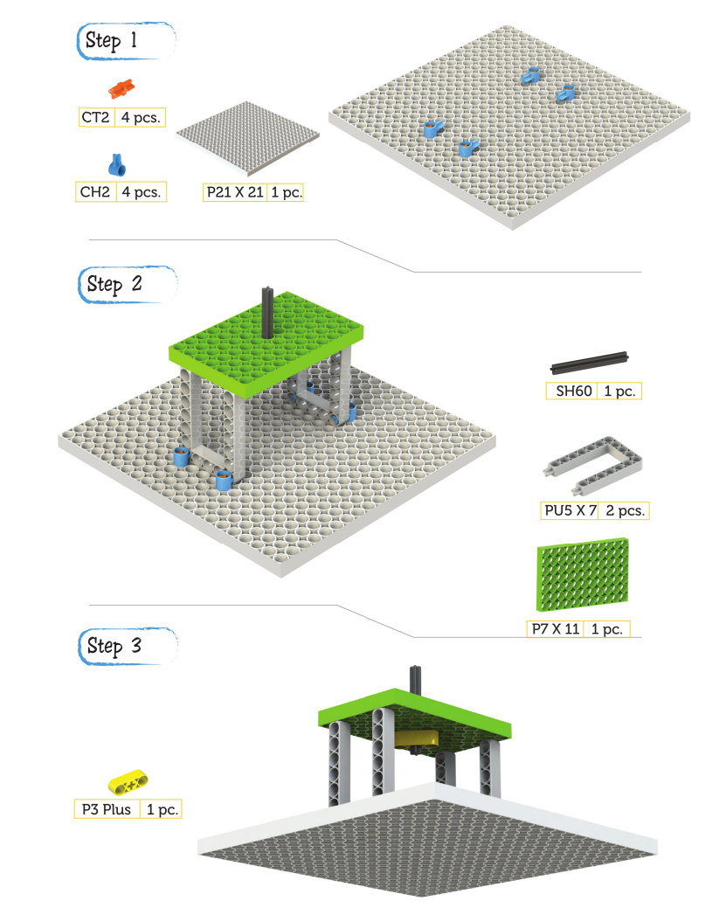
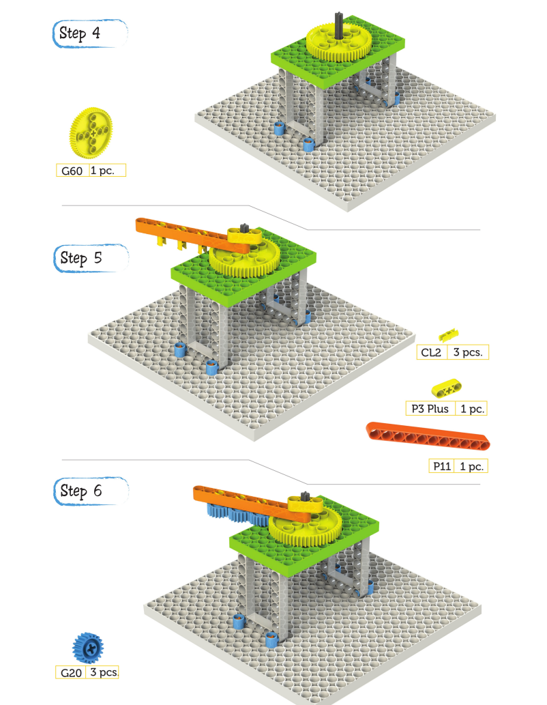

CHAPTER 20 - EARTH MOON & SUN
They continued by keeping a record of the time. The sun was setting,
and three of them sat on the floor to rest.
Kit looked at the sky and called Laya. Laya Laya Laya, look at this
moon, how beautiful it appears. And Is it inside the earth?
Laya:
Oh no Kit!! We live on the outermost layer on earth and that's why we
could see the moon from here.
Kit:
Ohh Really ? I want to know more
Laya:
Ohk, like the other planets the earth rotates around the sun and it
takes 365 days to complete a full orbit. We call this a complete
revolution.
And thanks to this revolution we have different seasons throughout the
year. At the same time the earth rotates around itself and it takes 24
hours to complete a full trip.
This movement is called rotation and the earth's rotation is
responsible for the change between day and night and for the rising
and falling of temperatures.
KIT: Wait what ? I didn't understand so much of it.
Laya:
Brrrrr!! Okay let me create a model and then explain.


Step 8
TW1 - 1 pc.
P3 Plus - 1 pc.
G20 Plus - 1 pc.
Wheel - 1 pc.
The side of the earth facing the sun experiences day, while the other
side experiences night. That's how we understood time in the primitive
era.